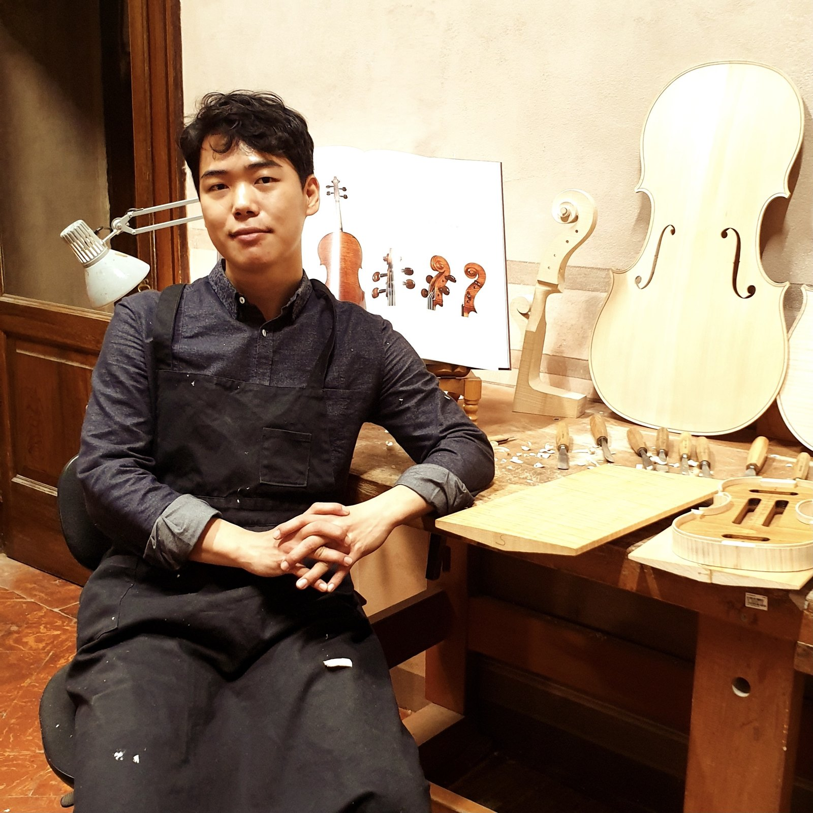

Photograph courtesy of the maker
instruments
Gawang Jung
Born in Incheon, Korea, in 1990, Gawang Jung turned to violin making after high school and spent two years studying Italian and the fundamentals of instrument construction before entering the Cremona violin making school directly into its third year in 2012. He graduated in 2015 under Massimo Ardoli and in 2016 began an apprenticeship with Francesco Toto, staying on in the workshop afterwards. At the 15th Cremona Triennale in 2018 he won the Gold Medal as overall winner of the cello section. After working with Toto as a freelancer from 2019 to 2021, he now runs his own workshop in the centre of Cremona.
Works in
Cremona
Makes
Violins, violas and cellos
Dealers
To be confirmed